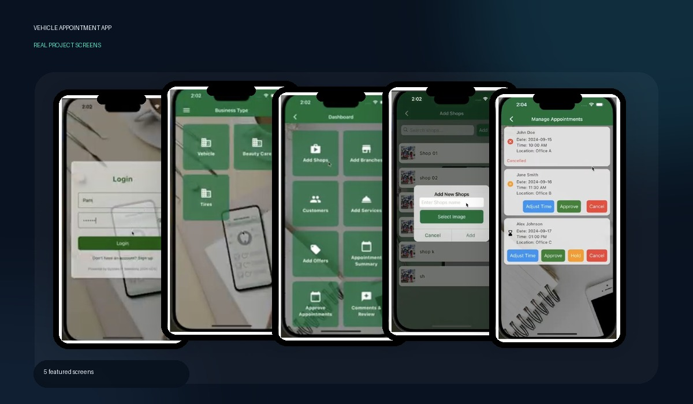

Featured real screensFlutter UI & feature development · No backend integration
Vehicle Appointment App
A dual-role appointment application with customer and merchant journeys, following the same overall structure as the salon appointment application.
- Login and business-type selection, including vehicle-related business flows.
- Separate merchant and customer entry points.
- Merchant dashboard and management screens for shops, branches, customers, services and offers.
- Customer-facing appointment booking, history and review screens.
Flutter / DartMaterial 3CupertinoUI developmentFeature implementation
Contribution: Flutter UI development and app feature implementation. Backend integration was not part of my contribution.